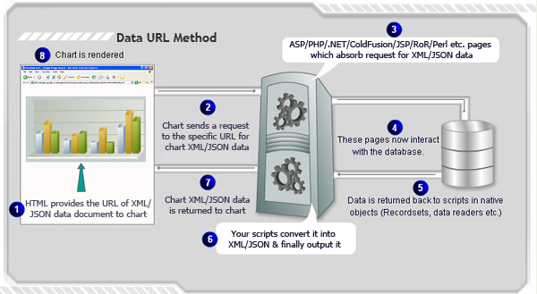
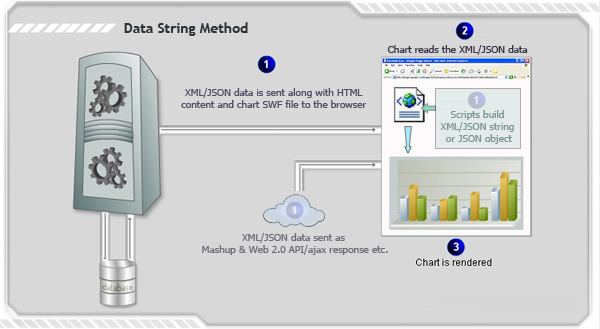

| How FusionCharts XT works? |
As you must already be aware by now, FusionCharts XT accepts only XML or JSON data to plot the charts. You can either provide physical XML or JSON data files or dynamically relay the data using server-side scripts to FusionCharts XT. Here, we explore the various methods using which you can provide data to FusionCharts XT. Please note that you do not ever need to save physical XML or JSON files on your server. When generating dynamic charts from your database, the XML or JSON files are built in memory (variables) using string concatenation or our API methods, and then dynamically relayed (written to output stream, like other HTML content). There are two ways using which you can provide data to FusionCharts XT:
 For detailed information on Data URL method, please go through the Data URL method page.  For more information read Data String method page. |